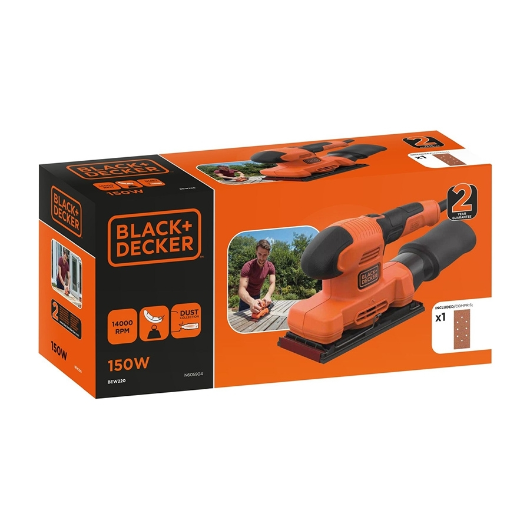

Lijadora orbital

Equipo que mueve una base abrasiva para eliminar pequeñas irregularidades y preparar madera, pintura u otras superficies. Permite obtener un acabado uniforme y reducir el esfuerzo del lijado manual.